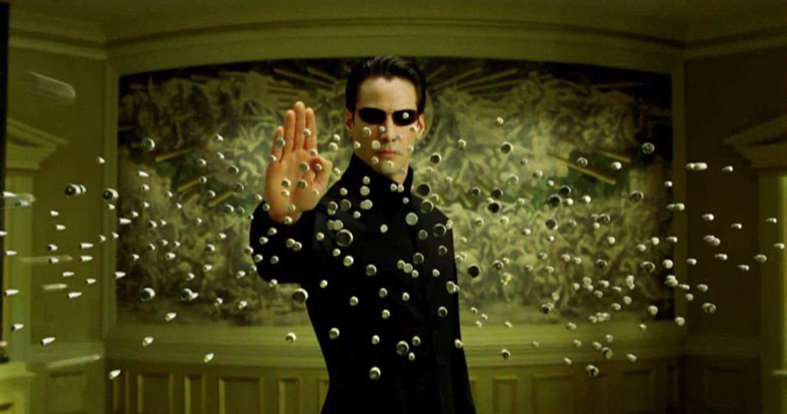
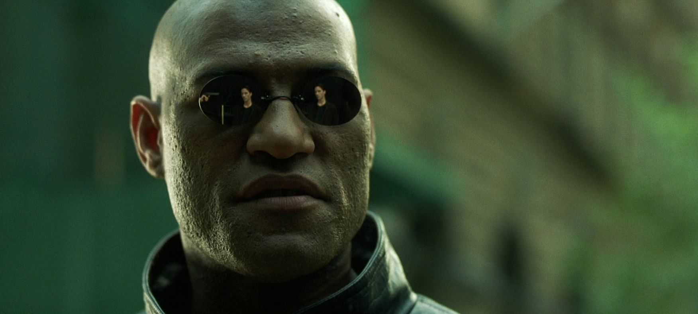
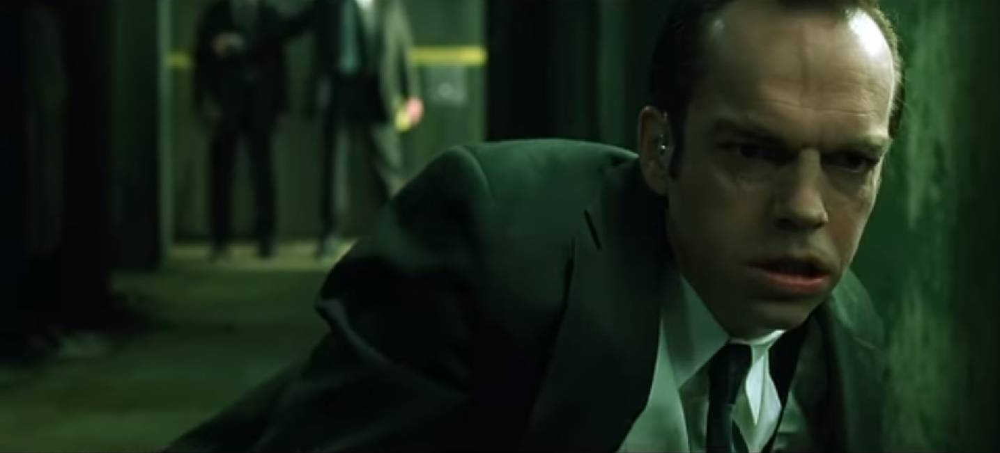

Hello, my name is Harry and I'm learning to code at Le Wagon! When I'm not coding, you'll find me watching The Matrix - check out my favourite Matrix characters below!

Neo AKA 'The One'The protagonist of the trilogy, a hacker who eventually liberates humanity from the Matrix. Soft-spoken and reclusive, Neo is initially confused when he is torn out of the Matrix by strangers. Morpheus and his followers look up to Neo, thrust major responsibility onto him, and seem to know all about him, but he has little idea why he has been chosen as the object of their admiration. As the trilogy progresses, Neo becomes more sure of himself as he accepts and nurtures his newfound abilities. Neo is a unique kind of superman: healthy, but not overmuscled; strong, but not especially masculine. He assumes responsibility but gives no lectures on moral goodness, and he doesn’t shy away from violence when it’s necessary. His character develops gradually from passivity toward action, until he finally initiates conflict in order to bring about resolution. |

MorpheusThe brooding and mysterious leader of the Nebuchadnezzar, a renegade ship. A tall, strong presence, Morpheus leads his crew bravely, delivering inspiring speeches and exhibiting utter calm in the face of every challenge. His physical size and rock-solid confidence make him an anchor for the ragtag crew of the Nebuchadnezzar. Morpheus is one of the first people to believe Neo is the One, and, since his faith in Neo has always been strong, Morpheus will go to any lengths to protect him. Morpheus is willing to die for Neo, but Neo is determined not to let this happen. Morpheus sports stylish sunglasses in the Matrix that consist only of lenses and a nose bridge. |

Agent SmithThe most important Agent, who proves to be Neo’s foil. Able to inhabit any body in the Matrix, Agents Smith, Brown, and Jones are literally no one and everyone. Smith is the most dangerous and powerful, and he proves to be much different from the other Agents. Over the course of the trilogy he develops humanlike anxiety that becomes increasingly desperate and egocentric. Initially he represents only inevitable death, but eventually he develops a personality, a blend of sarcasm and incomprehension of the program in which he’s an anomaly. Smith, like the other Agents, wears a standard gray business suit, sunglasses, and a white earpiece through which he assimilates the information of the Matrix’s code. Smith manages to replicate himself a million-fold, rendering himself Neo’s toughest, most persistent enemy. One of the greatest villains of all time, period. |